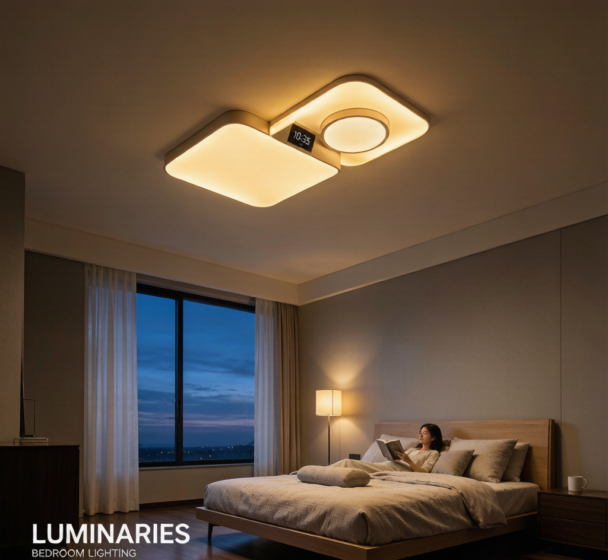

你买的"全光谱灯"，可能只是换了个灯珠
2026年的618刚过，不少人在小红书发了"全光谱护眼灯开箱测评"，评论区清一色的"真的能改善睡眠吗？""用了几天感觉没那么神啊"。
这不是个例。
过去两年，"健康照明"从专业术语变成了电商详情页的标配词汇。全光谱、低蓝光、节律照明、RG0豁免级……每个词都精准踩在消费者的健康焦虑上。但当你真的把灯装回家，发现除了"光更白了"之外，睡眠质量、用眼疲劳似乎没什么变化。
问题出在哪？
问题出在只有灯珠，没有驱动。
人因照明（Human Centric Lighting，HCL）不是换一颗全光谱灯珠就能实现的。它需要LED驱动电源在背后精确控制色温、亮度、时序——而大多数"健康灯"只用了一个普通恒流源，连无频闪都做不到。
下面我用三个底层技术问题，讲清楚：什么样的灯才能真正帮你改善睡眠。
一、色温曲线，不是调一个数值就够的
人的昼夜节律受光线的色温、照度和时序三重调控。
早晨需要高色温（5000-6500K）高照度的冷白光来抑制褪黑素、唤醒身体；白天维持在4000-5000K的中性光保持清醒；傍晚逐渐降到3000K以下的暖光，为入睡做准备。
这个逻辑听起来简单，但实现起来有两道技术门槛：
1. 混色输出的一致性
市面上很多"调色温"灯用的是双路LED芯片——一路冷白、一路暖白，通过调节两路电流比例来改变最终色温。
问题在于：普通PWM调光在低亮度下会产生严重的色偏。当两路LED的PWM占空比不精确同步时，实际输出的色温与标称值可能偏差300-500K——这个偏差足以让"3500K助眠光"变成"3800K普通暖光"。
好的驱动电源（比如用0-10V或DALI协议控制）能做到±50K的色温精度，靠的是：
- 高分辨率PWM（至少16bit，65536级）
- 两路输出独立闭环恒流
- 硬件级别的混合输出校准
2. 日出/日落模式的时序精度
HCL的核心卖点是"模拟日出唤醒、日落助眠"——灯光在30分钟内从暗到亮缓慢过渡。
这要求驱动电源具备内置时钟和平滑过渡算法。不是所有驱动都做得到。便宜的方案用MCU简单线性插值，实际效果就是"灯突然亮了/暗了"；好的方案用对数曲线模拟人眼对亮度的非线性感知，过渡如呼吸般自然。
选购建议：看产品参数表里有没有"色温精度 ±50K"和"对数调光曲线"这两项。没有的，基本就是普通调光灯贴了HCL标签。
二、频闪——最容易被忽略的睡眠杀手
这里先给一个你可能忽略的结论：即便你肉眼看不到频闪，你的大脑仍然能"感知"到。
国际照明委员会（CIE）的研究表明：人眼视网膜神经节细胞（ipRGCs）对100-200Hz范围内的光波动仍有响应，即使主观上感觉不到闪烁。这种"不可见频闪"会干扰褪黑素分泌的节律信号，导致入睡困难或睡眠浅。
驱动电源的频闪控制有三个关键参数：
| 参数 | 普通驱动 | 健康照明级驱动 |
|---|---|---|
| 输出纹波 | 30-50% | <5% |
| 频闪百分比 | >10% | <3%（IEEE 1789无风险级） |
| 调光深度 | 10% | 0.1% |
- 输出电流纹波 <5%：这个级别的纹波才能确保在任何亮度下，频闪百分比都不超过3%
- 0.1%调光深度：深夜助眠模式需要极低亮度（比如1-5流明），如果驱动的最低输出是10%，那"月光模式"就是一场灾难
- 高频PWM（≥25kHz）：超过人耳可听范围和ipRGCs敏感频段
选购建议：用手机摄像头对着灯看是否有滚动条纹（基础检测）。专业判断要看"IEEE 1789无风险级"或"频闪百分比<3%"认证。
三、全光谱 ≠ 健康光
全光谱是个好概念，但已经被用烂了。
真正的全光谱灯需要LED灯珠的荧光粉配方和驱动电流的精确配合，才能实现Ra>95、R9>90的高显色性。但很多产品只是用了"接近全光谱"的灯珠，配上失真率高的驱动电源，最终输出光谱的显色指数掉到Ra<85——那你花的全光谱的价钱就白花了。
更关键的是蓝光峰值控制。好的健康照明产品在"助眠模式"下会主动压制460-480nm蓝光波段的输出。但普通的驱动电源根本没有这个控制能力——它只能调亮度，不能调光谱。
那什么才算一台合格的HCL驱动电源？
如果驱动电源没达标，你买的"健康灯"别说改善睡眠，可能还不如一盏传统白炽灯。
总结：先看驱动，再看灯珠
回到开头的问题：智能灯真的能改善睡眠吗？
答案是：能，但前提是驱动电源足够好。
市面上90%的"健康灯"只是在普通灯芯上套了全光谱灯珠和"HCL"标签。真正决定光品质的是驱动电源——它的纹波、调光精度、色温稳定性、频闪控制，才是你能不能睡个好觉的底层保障。
下次买灯，别再只看"全光谱"三个字。问商家要看驱动电源的参数表——如果对方拿不出来，那就不值得为"健康"多花一分钱。
本文作者：Nexlamp 技术团队 | 专注智能照明LED驱动电源研发与制造 产品咨询：www.nexlamp.com